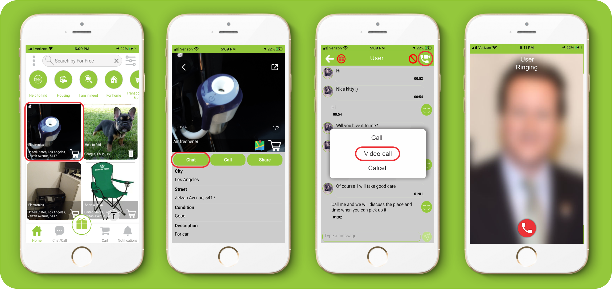

1. What is For Free and how does it work?
“For Free” is a free of charge app an web site, where you can receive or give away free items and use free messages and free calls (only in app) of the app for this purpose.
2. Is “For Free” free to use?
Yes, “For Free” is completely free.
3. Is there a mobile app?
Yes. “For Free” is a mobile app, that has Android OS and iOS support.
Download from:
For Android OS – Google Play Store >
For iOS – Apple Store >
4. When do I need to register?
You need to register in case of any action, other than browsing.
5. Can I browse without registering?
Yes. You will be able to browse with the status of “Guest”.

6. How to register?
If you make any actions in the “Guest” mode then you will go to the registration and login page.

1. Swipe the left menu.
2. Click the “Register” button.
3. Fill registration information.
4. Click the “Register” button
5. After Register please check your e-mail to confirm registration link.

7. I haven't received the verification email after signing up.
Email perceives similar emails as spam, so search for confirmation email in spam folder.
8. How do I change language to For Free?
Method # 1 - Select the language on the sign up and log in page.
1- Swipe the left menu.
Method #2 – Select the language on the left swipeable menu.
1- In the list displayed, find the language you wish by name or find it in the grid.
9. What is my username and how do I change it?
Your “User name” is your e-mail address, by which you have signed up. Changing the “User name” is impossible.
10. How do I change my profile picture?
1. Swipe the left menu.
2. Click the “Profile” button.
3. Click the "Edit data" button.
4. Click the “Browse” button and choose the photo from your pc albums
5. After adding the photo click the “Submit” button.

11. How do I change my name?
1. Swipe the left menu.
2. Click the “Profile” button.
3. Click the "Edit data" button.
4. Edit your name.
5. Click the “Submit” button.

12. How do I change my phone number?
1. Swipe the left menu.
2. Click the “Profile” button.
3. Click the "Edit data" button.
4. Edit your Phone number.
5. Click the “Submit” button.

13. How do I change my email address?
You cannot change the email address, as the email address specified at the time of registration is used as your personal account identifier.
14. How do I change my location?
1. Swipe the left menu.
2. Click the “Profile” button.
3. Click the "Edit data" button.
4. Edit your Address.
5. Click the “Submit” button.

15. How do I change my password?
1. Swipe the left menu.
2. Click the “Profile” button.
3. Click the "Edit data" button.
4. Edit your Password.
5. Click the “Submit” button.

16. How do I change info about me?
1. Swipe the left menu.
2. Click the “Profile” button.
3. Click the "Edit data" button.
4. Edit your info "About me"
5. Click the “Submit” button.

17. Where are all the posts?
All ads can be viewed on the For free website homepage.
1. In order to go to homepage click the “Home” button on the lower panel.

18. How do I refresh my homepage?
1. The homepage automatically updates every 3 minutes.
2. Click the “Home” button on the lower panel.
19. How do I find ads and items by category?
1. Select a category after which will be displayed only those posts, whichever category you have chosen.
2. You will be able to return to the homepage and shared posts with the "HOME" button.

20. How do I find an item using filters?
1. Click the “filter” button.
2. Select the category in which you want to search for items.
3. Search by description.
4. Select sorting by: Newest first or Oldest first.
5. Selec by posted within: The last 30 days, The last 7 days or The last 24 hours
7. Click the “See results” button.

21. How do I select categories to get notifications?
1. Swipe to the left menu.
2. Click the “Settings” button.
3. Turn "On" notifications.
4. Click on the "Select categories"
5. Select categories and click the “Save” button.
6. Click the “Yes” button.

22. How do I add/remove items to cart?
1. After selecting the item, click on the “cart” button.
2. You should answer “yes” to the notification “Save to cart”?
3. The number of saved items will be seen on the “cart” on the lower panel. You will be able to see the list by clicking on the cart.
4. Click on the “remove” button for the item saved in the cart.
5. On the displayed notification “Remove from cart?” you should answer “Yes”.

23. How do I find the item's location in the ads?
1. Click and open the item.
2. Click the map.
3. Click on the drawing pin on the map.

24. How do I reply to a post that I'm interested in?
After selecting the item you can talk to the gifter by means of free chat and free calling of the app “For Free”.
25. How do I contact with the gifter?
1. Click and open the item.
2. Click the "Chat" button.
2. Write a free message.

26. I reply to a post and nothing happens!
If you contacted the gifter, it is up to the gifter to respond.
27. How and where should I arrange the pickup of an item?
Organizing of transfer or receipt of an item takes place directly between the gifter and the receiver.
28. How do items change hands - are they picked up or delivered?
The item is free and you must either take it or negotiate with each other.
29. Where do replies to my posts and messages go?
Conversations can be found in the chat section.

30. How do I report?
1. Open the ad.
2. Click the "Chat" button.
3. Click the “OK” button for confirmation.
4. Write the reason why you are reporting.
5. Click the “Report” button.
6. Check report number and click “OK”

31. What can I do if I get banned?
1. If you are banned, you should see a message, “You have been banned! Would you like to contact support?”
2. Swipe to the left menu
3. Click the "Support" Button.
4. Fill in the required fields and click the “Send” button.

32. How do I post the ad?
1. Click the “gifting” button on the Homepage.
2. Select the category where you want your post to be placed.
3. Enter the name of the item in the title.
4. Select from the list the denotative of the condition of the item.
5. Enter a description.
6. By clicking on the location sign open location map, search address on map and click "Confirm location" button.
7. To select the duration of the ad, if desired, click the button and set the desired date and confirm.
8. Click "Choose File" button to select photo from PC folder.
9. Click the “POST” button to post your ad.

33. When I try to post, the submit button doesn't do anything!
Make sure, that you have filled all the required fields in the ad.
34. How do i find my placed items?
1. Swipe to the left menu
2. Click the “my placed items” button.

35. Can I buy, sell, trade or barter?
No. Only gifting or assistance to other users free of charge is allowed in the “For free” app.
36. Can animals and pets be posted?
Yes, you can place the animals in the appropriate section.
37. How can I delete, remove or edit my posts?
1. You will not be able to correct the ad but you can delete the ads you have posted.
2. After clicking "Delete" button, agree with the "YES" button to the notification "Do you want to delete your post?"

38. How do I choose who to give my offer to?
Anyone interested in gifting your item will contact you via free chat and free calling. Only you decide to whom to give the item.
39. How do I mark my offer as a gift?
1. After giving the gift, click the gift button on the chat.
2. On the message “did you give help?” Click “yes “.
3. Rate the user with stars.
4. Write a comment and click “OK”
After give a rate the user your item or help will be taken from Home page

40. How do i find my giveaways?
1. Swipe to the left menu
2. Click the “Giveaways” button.

41. How to confirm that the help has been delivered?
1. After receiving help, click the gift button on the chat.
2. On the message, “Did you receive any help?”, click “Yes”.

42. How do I block the user?
1. Open the ad.
2. Click the “Chat” button.
3. Click the “Block” button.
4. Answer "Yes" to the displayed notification.

43. How to unblock the user?
1. Open the ad.
2. Click the “Chat” button.
3. Click the “Unblock” button.
4. Answer "Yes" to the displayed notification.
44. How do I invite people to For Free?
1. Click the menu in the upper left corner.
2. Select “Invite friends” on the displayed menu.
3. From the list displayed by your device, select the messenger, SMS, email, etc.
4. Select a contact from the list and send them a link to downloading the app “For free”.

45. I don't see any posts?
1. Make sure you have an internet connection on your PC.
46. How do I find the "Menu"?
1. Click on the "Menu" button to the left upper corner of the web site

47. How can i "Log out"?
1. Swipe the left menu.
2. Click the “Logout” button.

48. What does the color of notifications mean?
The colors of the notifications:
50. Where can I find the info about web site?
1. Swipe to the left menu.
2. Click the “About” button.

51. If I cannot log in how do I reset account?
Reset your password or contact our Help Center.

52. If I forgot my password, what should I do?
1. Type email in the field on the Login Page, by which you are registered on the app “For free”.
2. Click on the "Forgot password" button, after which you will see the notification, that a password has been sent to your email.
53. How do I apply for support?
1. Swipe to the left menu.
2. Select the “Support” on the displayed menu.

54. Where do i write an web site review?
1. Swipe to the left menu.
2. Select the “Reviews” on the displayed menu.
3. Write Review.
4. Click the SEND button.

55. Where do I write my opinion?
1. Swipe to the left menu
2. Click the “Your opinion” button.
3. Write your opinion text and click “OK”.

56. How do I unsubscribe from a ”For Free” ?
Remove your account.
57. How do I remove my account?
1. Swipe the left menu.
2. Select „Profile“ on the displayed menu.
3. Click „Remove Account“ and answer “yes” to the question “Are you sure you want to remove your account?”.
4. From the list displayed, select the reason why you remove your account.
5. You will receive the confirmation “Remove Account” on that email, by which you are registered on the app.
6. Approve the account removal.

58. How do I activate my account if I change Device?
1. Enter your email address on the login box on the device.
2. Type your account password and confirm.
59. What is the Fair Offer Policy?
Visit this link: WelcomeApps.Net/Policy.
60. What are the rules and guidelines?
Visit this link: WelcomeApps.Net/Policy.
61. How can I use my existing membership account with For Free?
Visit this link: WelcomeApps.Net/Policy.
62. Where are the policies?
1. Swipe to the left menu.
2. Click the “Policies” button.

63. Where are the statistics?
1. Swipe to the left menu.
2. Select the “Statistic” on the displayed menu.

64. What do statistics mean?
The number of items donated by you will be taken into account and
will appear on your behalf on the statistics page in the overall ranking. 
65. What does the statistics status mean?
1. Before 10 given items you will have Bronze status.
2. Before 100 given items you will have Silver status.
3. Before 1000 given items you will have Gold status.
4. Before 10 000 given items you will have Platinum status.

66. What does „correct translation” mean?
If you come across an incorrectly translated word in your language, you can help us and send us the correctly translated version.
67. How can I use the ,,Correct translation” for the PC?
Swipe to the left menu
1. Click the “Correct translation” button.
2. Choose the language
3. Edit translate and then press "Send" button

68. How can i send photos in chat?
1. Click the "Add Photo" button
2. Choose "Take Photo" or "Select From Album"
3. Click the "Send" button
4. After sending photos you and the receiver can click on the picture and zoom in

69. How can i see users near me?
1. Swipe to the left menu
2. Click the "Users near you" button
3. Click the users pin on map
4. If you want to see user item`s click "YES" button

70. How can I see the item’s location and route?
For Adnroid
1. Click on the ads
2. Click the "Map" button
3. Click the items location pin on map
4. Click the "Route" or "Google maps" button

For iOS
1. Click on the ads
2. Click the "Map" button
3. Click the pin

71. How do I get back to my location if I have another address specified in the search?
Click the "Update Location" button to return your current location

72. If you can’t find the answers to your questions above, contact us
On this link: WelcomeApps.Net/Contact.